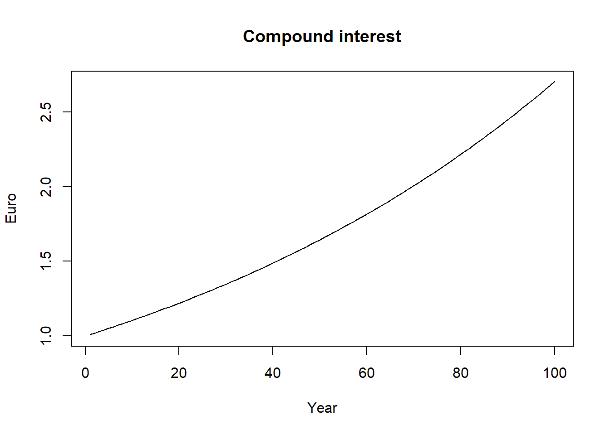
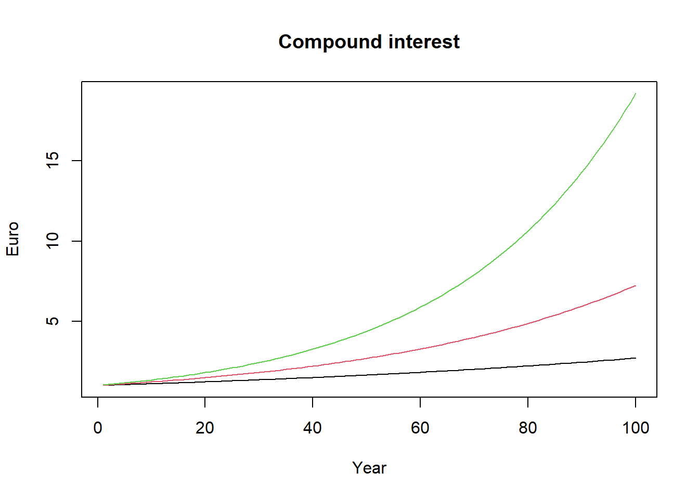
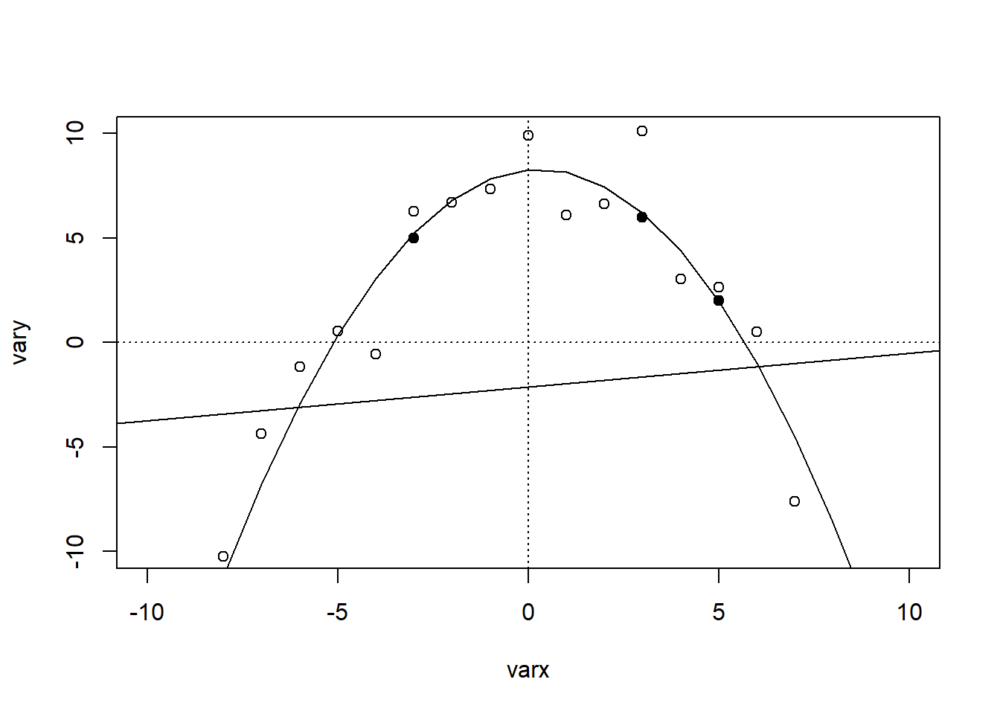

Chapter 10 Econometrics 1
The linear regression model - Part 19
We are given the following set of values:
We want to find the line that minimizes the sum of squared residuals, i.e. the squared distance between the observed value and the line. In a simple bivariate case as this one, we have to find a slope (\(\hat{\beta_1}\)) and an intercept (\(\hat{\beta_0}\)) for the line so that the sum of squared residuals is as small as possible.
\[\begin{align} y_i & = \hat{y_i} + \hat{u_i} \\ \hat{y_i} & = \hat{\beta_0} + \hat{\beta_1}x_i \\ y_i & = \hat{\beta_0} + \hat{\beta_1}x_i + \hat{u_i} \\ \hat{u_i} & = y_i - \hat{y_i} \\ \hat{u_i} & = y_i - (\hat{\beta_0} + \hat{\beta_1}x_i) \end{align}\]
We have now a function that we want to minimize with respect to \(\hat{\beta_0}\) and \(\hat{\beta_1}\).
\[\begin{align} f(\hat{\beta_0}, \hat{\beta_1}) = \sum_{n=1}^{3} \hat{u_i}^2 = \sum_{n=1}^{3} (y_i - \hat{y_i})^2 = \sum_{n=1}^{3} (y_i - (\hat{\beta_0} + \hat{\beta_1}x_i))^2 = \sum_{n=1}^{3} (y_i - \hat{\beta_0} - \hat{\beta_1}x_i)^2 \end{align}\]
We now take the derivative of (6) with respect to \(\hat{\beta_0}\) and set it equal to 0. We then do the same thing for \(\hat{\beta_1}\). These are the so-called .
\[\begin{align} \dfrac{\partial f(\hat{\beta_0}, \hat{\beta_1})}{\partial \hat{\beta_0}} & = -2\sum_{n=1}^{3} (y_i - \hat{\beta_0} - \hat{\beta_1}x_i) = 0 \\ \dfrac{\partial f(\hat{\beta_0}, \hat{\beta_1})}{\partial \hat{\beta_1}} & = -2\sum_{n=1}^{3} x_i (y_i - \hat{\beta_0} - \hat{\beta_1}x_i) = 0 \end{align}\]

## [1] 5.5 4.0 3.5## [1] -0.5 2.0 -1.5## [1] 6.5## [1] 2.166667## [1] 8.666667## [1] 8.666667## [1] 0.25## [1] 0.25## [1] 2.54951##
## ===============================================
## Dependent variable:
## ---------------------------
## y
## -----------------------------------------------
## x -0.250
## (0.433)
##
## Constant 4.750
## (1.639)
##
## -----------------------------------------------
## Observations 3
## R2 0.250
## Residual Std. Error 2.550 (df = 1)
## ===============================================
## Note: *p<0.1; **p<0.05; ***p<0.01##
## Call:
## lm(formula = y ~ x + I(x^2))
##
## Coefficients:
## (Intercept) x I(x^2)
## 7.9375 0.1667 -0.2708
Which model has the largest \(R^2\)?
##
## ===================================================
## Dependent variable:
## -------------------------------
## vary
## (1) (2)
## ---------------------------------------------------
## varx 0.162 0.162*
## (0.360) (0.080)
##
## I(varx2) -0.284***
## (0.015)
##
## Constant -2.140 8.281***
## (2.182) (0.724)
##
## ---------------------------------------------------
## Observations 21 21
## R2 0.010 0.954
## Residual Std. Error 9.999 (df = 19) 2.208 (df = 18)
## ===================================================
## Note: *p<0.1; **p<0.05; ***p<0.01Text and the derivation above rely on the suggested literature: Wooldridge, J. Introductory Econometrics: A Modern Approach (Chapter 2) and Dougherty, C. Introduction to Econometrics (Chapter 1).↩︎